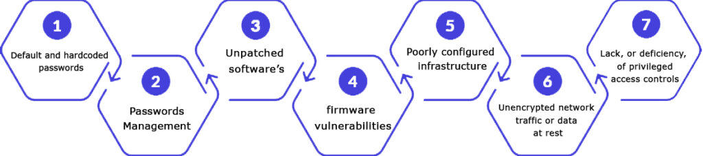
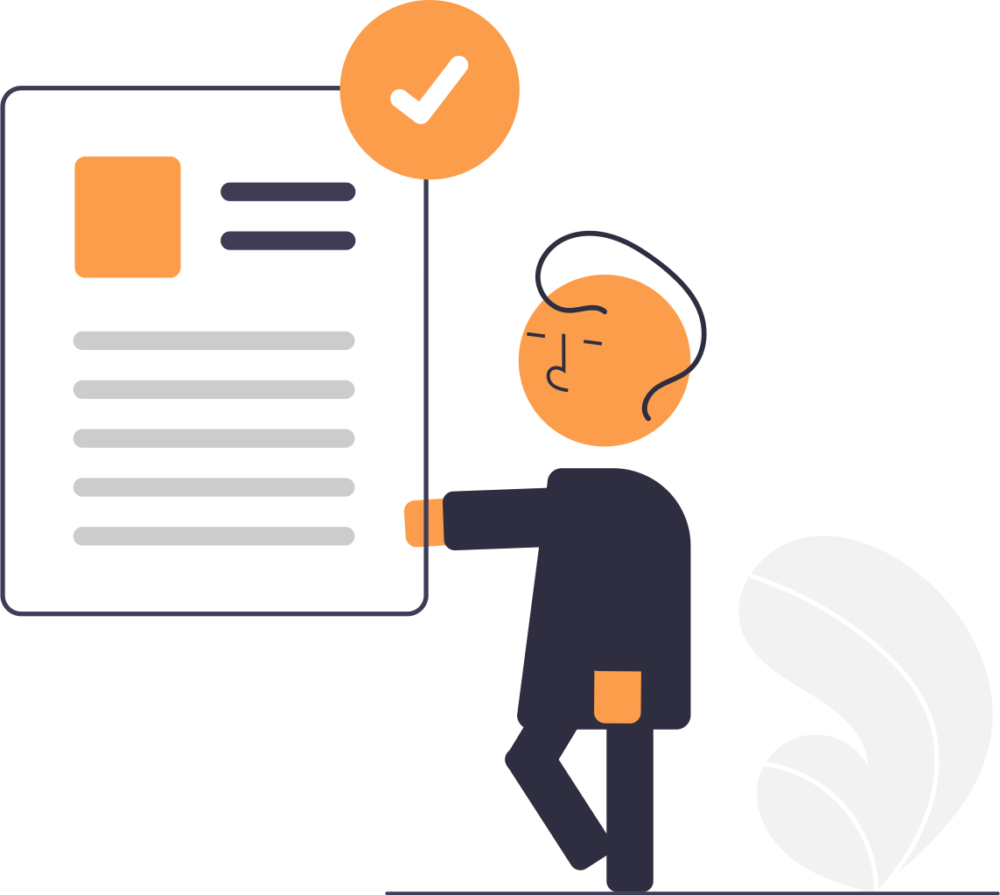

Secure Code Review
A secure code review is a specialized process that involves manually and/or automatically reviewing an application’s source code to uncover hidden vulnerabilities, design flaws, detect insecure coding practices, backdoors, injection flaws, cross site scripting bugs, weak cryptography, etc.
Every business develops software or applications that are written in a variety of languages and frameworks. Each application/software is programmed with a set of codes that may have various vulnerabilities and weaknesses. The goal of secure code review is to improve the code’s security and uncover any flaws before they may cause any harm.
Every business develops software or applications that are written in a variety of languages and frameworks. Each application/software is programmed with a set of codes that may have various vulnerabilities and weaknesses. The goal of secure code review is to improve the code’s security and uncover any flaws before they may cause any harm.

Request sample VAPT Reports

Request a Sample Certificate
Need for a Secure Code Review
Reviewing security codes aids an organization in lowering overall maintenance and development costs, increasing the effectiveness of code lines, and reducing early-stage dangers. Secure code reviews are a required aspect of compliance in several areas, including healthcare, financial services, and e-commerce. It also adds another degree of protection to the application’s security before it’s released. Adiroha’s comprehensive security code review services will help you shorten review times and improve the cost-effectiveness of your security verification procedure.

Adiroha is a CERT-In Empanelled Security Auditor

Benefits of Code Review
- Bugs are discovered early on, preventing any severe setbacks from occurring in the future.
- The codes are optimized, which boosts performance and improves the user experience.
- It enables the development team to apply new methodologies and collaborate in new ways.
- It gives stakeholders more confidence and encourages them to participate.
- It enables the project’s requirements to be met, and monitoring improves the project’s quality.
- The application’s needed structure is reflected in the design and framework implementation.

Adiroha Approach
Our security professionals use their knowledge to conduct a manual and automated assessment to identify all potential coding issues. Then they give methods for resolving and resolving those errors.
In the review process, we have a series of specialized steps. The steps are as follows:

1. RECONNAISSANCE
This is the first step in the Secure Code Review process, where data is gathered. This necessitates the examination of secure codes created by certain software. Our review team thoroughly examines the codes and provides valuable insight into the application. The details of libraries and code modules are detailed in the insights.
2. THREAT ASSESSMENT
The goal of threat assessment is to understand the software or web-based application’s design and infrastructure. The threats that have been identified are referred to as vulnerabilities, and they will be enumerated in descending order of danger. Through threat assessment, our review team will identify the weaknesses and recommend the best course of action for resolving them.
3. AUTOMATION
For huge codebases and multidimensional code structures, automation is required. For automated code review, many open source and commercial software are utilized. The most fundamental use of automation is the examination of millions of lines of code. The automated methods are quite good at spotting vulnerable code packets. The developer or any security analyst can assess them further.
4. CODE REVIEW TOOLS
Some of the tools we use for .NET are:
Puma Scan: It is a .NET C# open source static source code analyzer.
.NET Security Guard: It is helpful in security audits on .NET applications. It finds SQL injections, LDAP injections, XXE, cryptography weakness, XSS, and more.
Secure Assist: It prevent insecure coding and configurations (.NET) by scanning code automatically as an IDE plugin for Eclipse, IntelliJ, and Visual Studio, etc.
5. MANUAL CODE REVIEW
The importance of manual code review in examining essential security safeguards cannot be overstated. It enables encryption, logging, data protection, access control, usage, and the back-end communication system to be verified. The manual review is also necessary for identifying data flow and tracking the attack surface of the application. Going over the code line by line is costly and time-consuming, but it improves the code’s clarity and helps to eliminate false positives.
6. CONFIRMATION & POC
After we’ve finished all the preceding procedures, we compile a report with all our findings in an easy-to-understand style. We documented every flaw in the code and devised a patching approach to address it. The issues and recommendations are addressed between the client’s development team and Adiroha’s security team, and the development team corrects them as necessary.

7. REPORTING
Following the completion of all these stages, our team creates a report that summarizes all the findings in an easy-to-understand manner. All code fragments and modules with risks or issues are represented by the team. Our team is also documenting the fix solution for each issue at the same time. Following a discussion between Adiroha’s team and the client’s development team, the report also includes a list of recommendations.